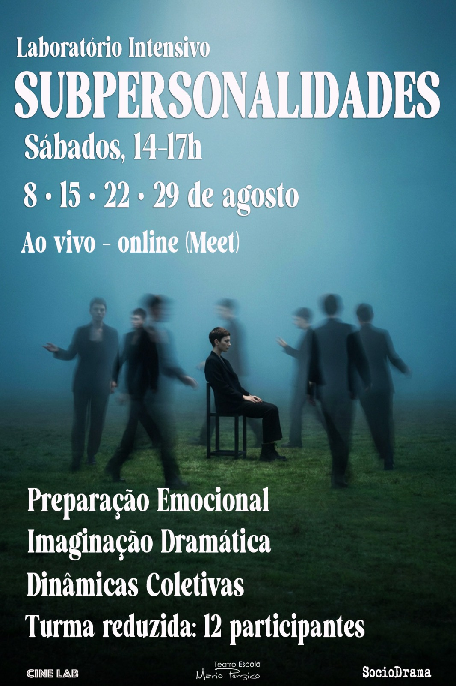

Diretor • Dramaturgo • Pesquisador
Nicholas Dieter
Laboratórios de Teatro, Cinema, Pesquisa e Formação Artística
Oficina em destaque

Arquivo vivo
Registros de oficinas
Imagens de ensaios, leituras e composições coletivas. O arquivo fica pronto para crescer com novas turmas, encontros e processos.
Outras aulas
Aulas, filmes e processos em vídeo.
Sobre
Pesquisa cênica com presença, escuta e composição.
Nicholas Dieter conduz laboratórios de teatro, cinema e formação artística voltados à presença, imaginação dramática, pesquisa cênica e composição coletiva.
Nicholas Dieter